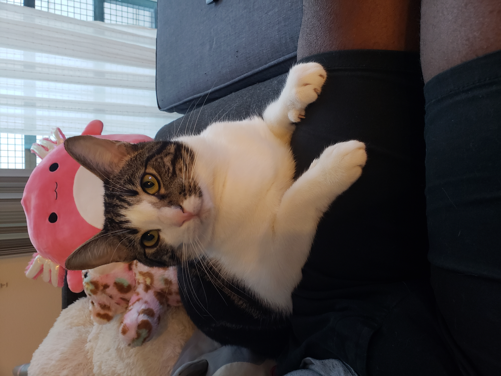
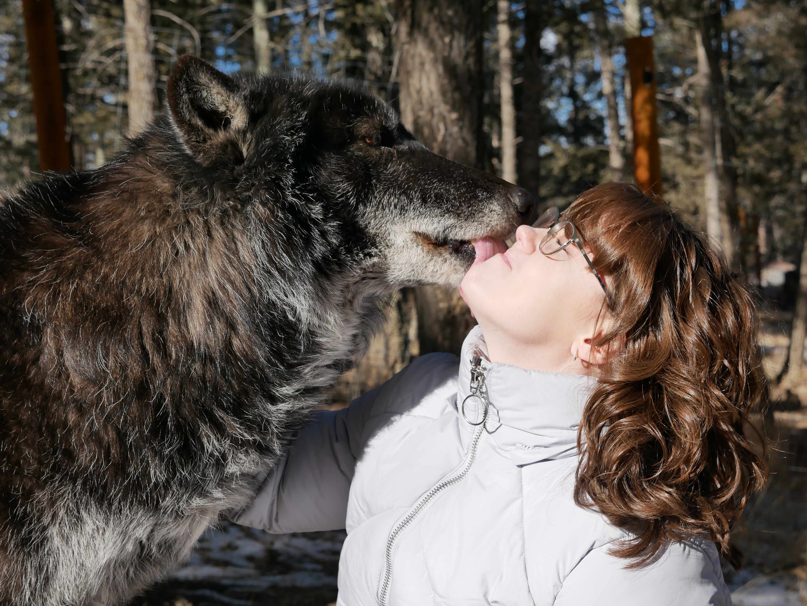
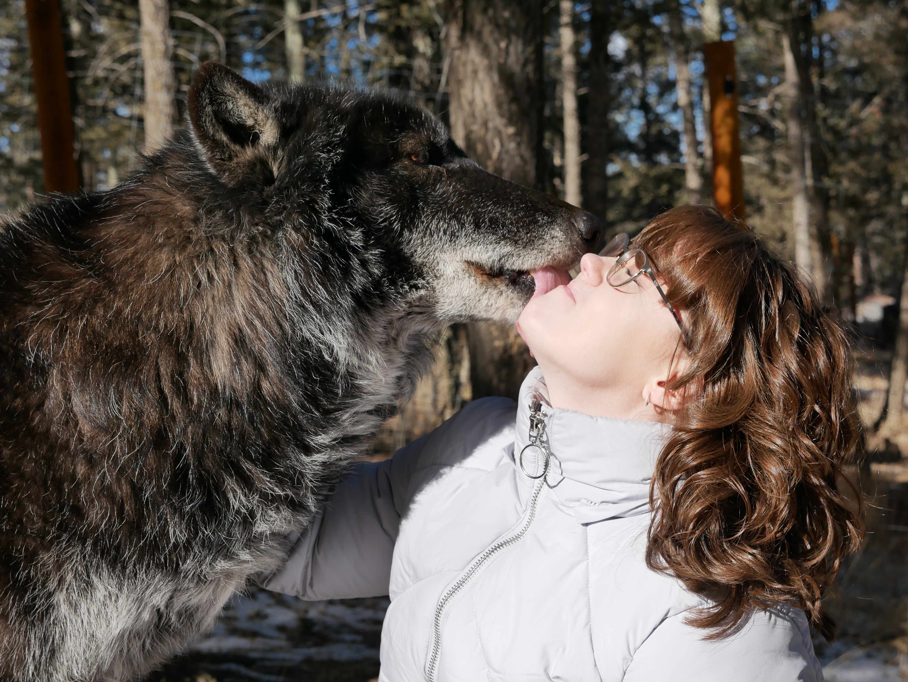
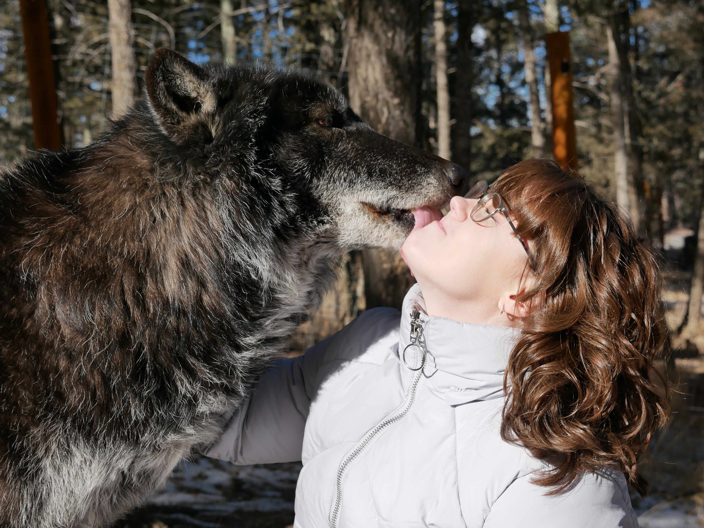
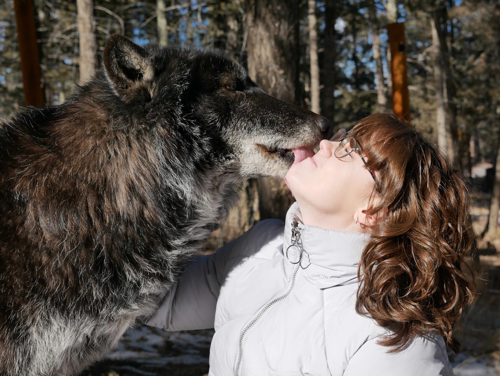
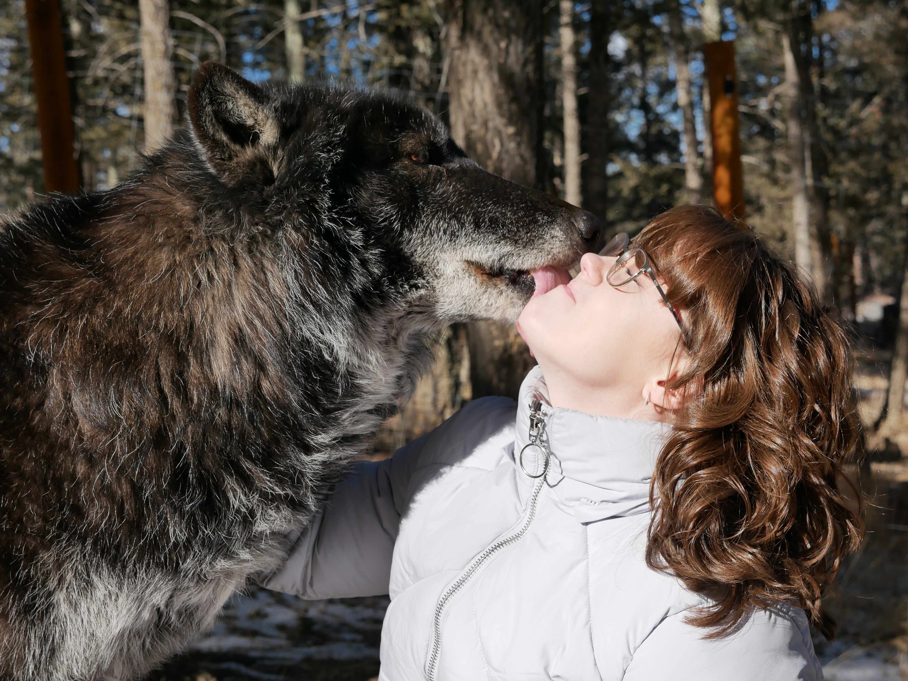

Home
DOM Pattern Project
Color Guessing Game
Dice Game
Dating Form Project
Survey Form Project
Profile - Skylar Foster
Call
|
Email
Your browser does not support HTML5 audio. Here is
a link to the audio
instead.
About Me
I was born in West Virginia, but raised mostly in New Braunfels, TX.
I live in Austin, TX.
I received my bachelors in Finance in 2017.
I got engaged this past December.
I have a business with my fiance.
Interests
I love playing Stardew Valley and Undertale.
I'm a cat person but love animals.
I love anime, art, and being crafty.


 


